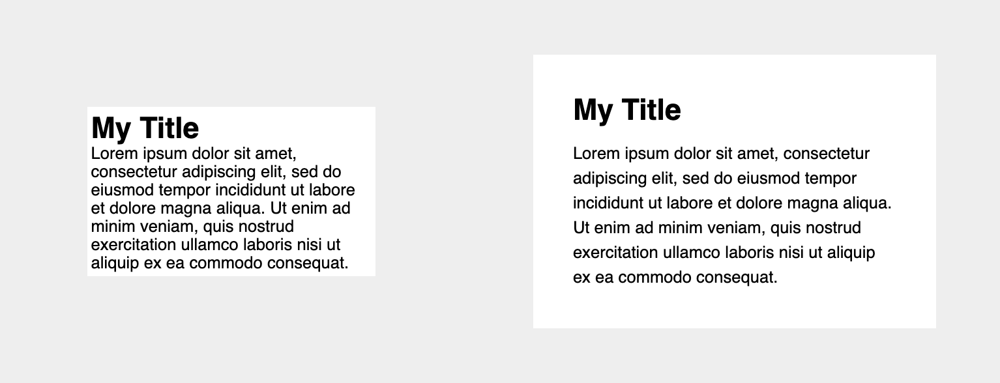

The seven most important building blocks of all good user interfaces are:
Check out Gary Simon's Youtube Channel called DesignCourse!
In the first lesson, you're going to learn how to use white space. White space is the empty space between the elements in your UI. Gary will show how by using just 3 CSS properties, padding, margin and line-height, you can significantly improve the appearance of your text.
In this chapter, Gary shows how alignment can improve things with minimal code. Alignment is the process of ensuring that every element is positioned correctly in relation to other elements. Again, with just 3 properties: margin, transform and text-align.
In this screencast, you're going to learn about contrast. Contrast is defined as being in a 'strikingly' different state from something else. Gary will cover 'Contrast guidelines' and how to ensure that your design is accessible to those with visual impairment issues.
WCAG 2.1 (Web Content Accessibility Guidelines):
Contrast can be checked with:
It's time to talk about scale. Gary will show that by leveraging the scale of different elements, you can greatly improve a design.
Typography requires the understanding of other fundamentals, along with a few other considerations. In this cast, Gary is going to give advice on how to effectively choose fonts, their size, spacing and a few more.
When building an UI you should use no more than 2 font families, but usually one does the trick. Keep in mind that visual hierarchy, font size, alignment, letter spacing and line height, font styles (weight, italics), color and contrast are also very important.
Color is the first UI design fundamental that shapes the user's experience! Gary covers some key considerations when choosing colors for the target audience, some common dos and don'ts, and some color combination basics.
Usually, for containers inside another container, you can choose a background color that's only a few shades darker/lighter than the parent's background color.
Keep in mind color significance for different cultures. E.g. green = wealth, nature, growth; black = luxury, sophistication.
Visual hierarchy is how you establish the importance of elements on a user interface. Some elements are more important than others.
In this chapter, Gary shows how you can improve a fairly bland design by highlighting some key aspects of it and improving its visual hierarchy.
This was compiled from FCC's free article Learn UI Design Fundamentals with this free one hour course.